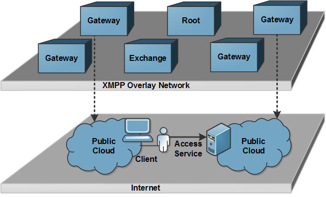

Architecture of the Intercloud Components
The architecture developed in this intercloud context is based on the Extensible Messaging and Presence Protocol (XMPP) and comprises three fundamental service elements as illustrated in the figure below.
Intercloud Root
The intercloud service elements are governed by autonomous organizations. An Intercloud Root element provides "root" services like naming authority, trust authority, directory services, and so forth. It acts as a broker in the intercloud overlay network and hosts a global cloud resource catalog which can be explored in order to discover desired cloud services. Assuming that such Intercloud Roots are distributed around the world which continuously synchronizing each other and are permanently updated with current cloud service product offerings advertised by cloud providers, these Root elements are providing a global distributed marketplace for cloud services.
Intercloud Exchange
An Intercloud Exchange provides negotiation and collaboration capabilities among heterogenous and autonomous cloud environments. Each Intercloud Exchange is affiliated with a particular Intercloud Root element and hosts second-tier services. Therefore such Intercloud Exchange can be seen as independent notary in the intercloud network. In the approach realized in this implementation, the Intercloud Exchange is designed as autonomous third-party Agreement-Mediator where individual SLAs for cloud service provisions are negotiated, established and evaluated.
Intercloud Gateway
The third fundamental Intercloud element is the Gateway. Such a Gateway represent an interface between a particular cloud or cloud provider and the intercloud network. Gateways translate intercloud requests and responses to the individual and customized protocol used by providers internally. Users of a particular cloud provider are able to access the intercloud network as users from such particular Gateway's sub-domain. When the user found a desired cloud service at another cloud, the access to the service is granted on the traditional way. In particular, the discovery and management of cloud resources are performed through the trusted XMPP overlay network, but the access after provisioning is performed over http, ssh or any other protocol outside the intercloud network.